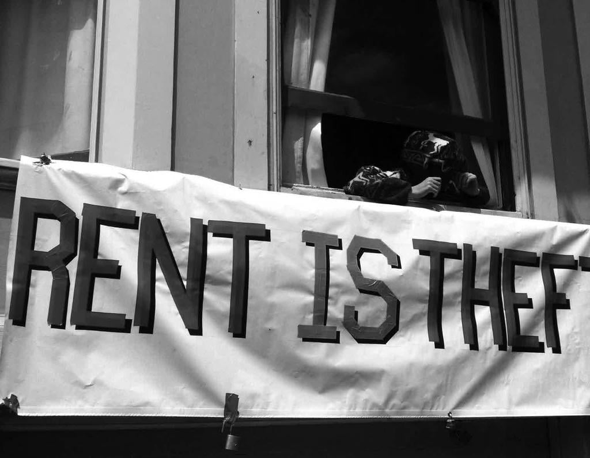
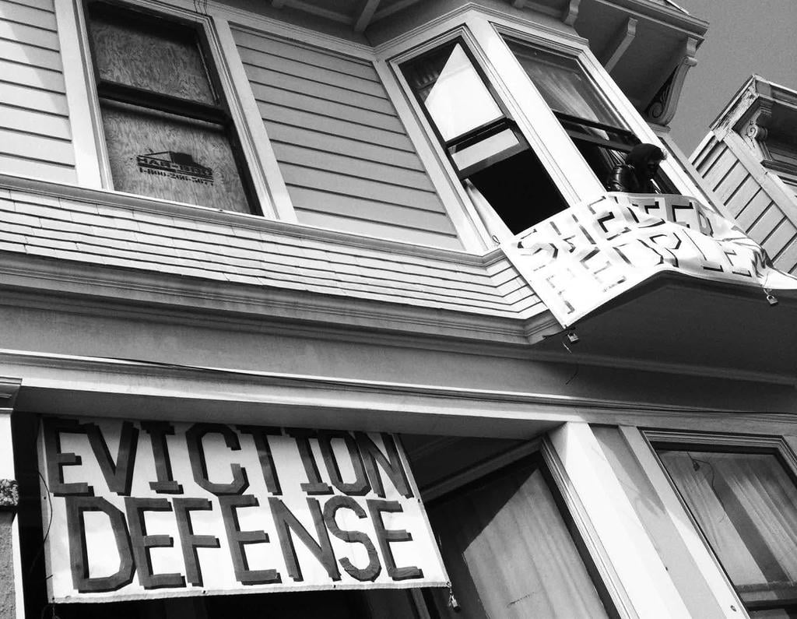
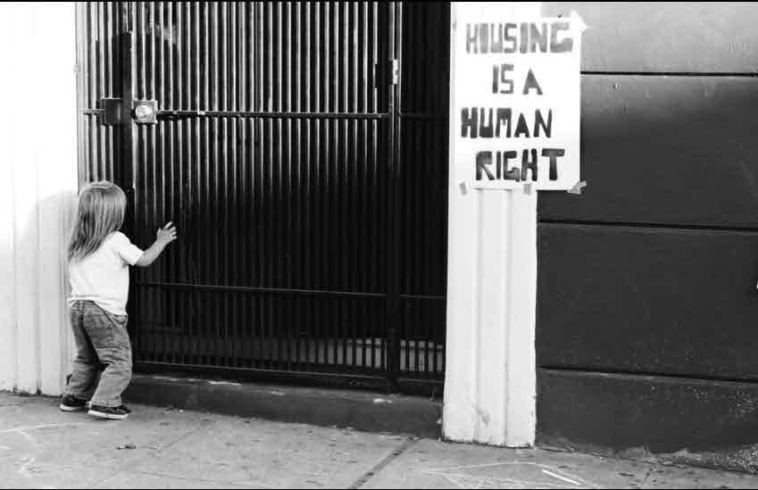

Take responsibility for yourself. We all have different experiences. This zine contains what has worked for us, a collective in San Francisco, composed of mostly white squatters without sensitive immigration status. Resources that are listed are somtimes specific to San Francisco city or county. This guide is not infallible or set in stone. There are no hard and fast rules. Every building is different. In the course of our nights we never cease to come across something that breaks with all our expectations. Every new squat will present challenges and gifts not to be found in these pages. Use your intuition and your common sense.
Above all, be safe, be free, and dream dangerously.
Homes not Jails is a consensus-based collective of squatters and squat supporters. Our goal to open as much vacant housing as possible and to keep it open as long as we can. Homes Not Jails is also a place for organzing and mutual aid among squatters and housing justice advocates in San Francisco. We actively fight to make our space inclusive and safer for everybody and combat oppression in all its forms.
Twenty years after its formation in 1992, circumstances have gotten worse and not better. In 2000, the U.S. Census Bureau recorded 16,827 vacant housing units in San Francisco. By 2010, that number had doubled to more than 31,000. Government and the real estate industry demonstrate their willingness to continue profiting off the hardships of everyday people — making it incumbent on us to take direct action to provide housing for ourselves. Homes Not Jails uses a two-pronged strategy for fighting back:
Homes Not Jails opens up vacant buildings and helps houseless people move into them. We take direct action because people need housing now! Over the years countless vacant buildings have been opened, providing housing for people without waiting or negotiating with the state or private interests. Many have lasted for years, many are still going strong, and more will be opened as long as people are forced to live on the streets.
Homes Not Jails organizes public direct actions called open housing occupations. An occupation is when HNJ and its allies reclaim a vacant building in order to expose the glut of vacant housing and to provide info and resources about squatting. Takeovers also serve as a introduction for first-time squatters!
Homes Not Jails operates with the practice of security culture. To us this means keeping a level of privacy to reduce risk and keep us safe. People have different levels of risk that they are comfortable with. Don’t assume that your comfortability is the same as someone else. The only way to know is through clear communication and consent. We are stronger as a community when we look out for each other’s safety and security.
It’s important to realize that what you say may not only put yourself at risk but may endanger others as well. It’s in your best interest to communicate and respect different levels of comfort and boundaries about sharing certain information. Since squatting and away teams involve illegal activities, that information should be kept on a need-to-know basis.
It’s our experience that its best to avoid mentioning the address, cross-streets, or any other identifying information about your squat. Only share this information with people you trust, and give it only when absolutely necessary. Squats can be given nicknames that obscure their location, but allow people to know they’re talking about the same building. When choosing a nickname, make sure it isn’t too obviously descriptive!

Likewise, protect your fellow squatters. Don’t mention the names of other people who were on your away team without their consent first. If you want to share tips and experiences, share only as much as you are comfortable with, but let others make that decision for themselves.
Scouting is when you go out and look for vacant housing to squat. The best time of day to scout for vacant buildings is at dusk, when most people are home, but not asleep yet. During this time, most still have their lights on. Obviously places with lights on are usually not vacant. You can, however, scout anytime. It’s a good idea to take many different routes between places you go daily, like home, school, and/or work. It’s also good to travel by the slowest means possible. If you usually would drive, bike. If you would otherwise bike, walk. You should also carry your notebook and tape at all times. The best day of the week is garbage day, if you can figure out when that is. Not having garbage cans out is a good sign that a house may be vacant.
Look for places that look a bit shabby. In San Francisco, where real estate is so valuable, this can be a strong clue on its own. Keep an eye out for any dated material like mail, old newspapers, or phonebooks (which are delivered at regular intervals) to make an estimate for how long its been since someone checked on the house. Make sure to check the dates on construction permits and job cards posted in the windows because construction projects sometimes stall. If they are sufficiently old, then it is a good sign it is vacant. A portapotty outside indicates that work is currently being done. A car parked out front of a house that looks like it is vacant is not necessarily a bad sign. This could mean that a property owner is trying to make the house look like it is lived in or that a neighbor knows that no one lives there and can use it as a free parking spot.
When a smoke detector’s battery is low, it will beep or chirp every 30-60 seconds. This noise would be far too annoying for a person living inside the building to tolerate. It can be heard faintly from outside the house. It takes a trained ear to recognize this sound and is easier to hear in the middle of the night when there is less background noise. It is a very good sign that a building is vacant (as long as its not just in the garage) and can be an indicator of empty houses that show no outward signs of abandonment.
If you can access the utility meters, you can see if the utilities are on and if they are using very much. An old style power meter with analog dials (not a smart meter with a digital display) is also a good sign of possible vacancy.
Some buildings are vacant but get worked on, shown to prospective buyers or checked on periodically. Some are abandoned but already squatted. Taping every access point on a building is the surest way to know if it is being entered. This is done by sticking a piece of tape across the gap between the door and the doorframe, so that if the door gets opened, the tape will be broken. No one type of tape is best. Blue painter’s tape stands up best in rain, with masking tape being second, but they both dry up and fall off in hot sun, and the color stands out dramatically. Clear packing tape is the most discreet, but falls off in the rain, and its loud to peel off. Duct tape is the most well rounded for different situations. Scotch tape is the easiest to peel off quickly and quietly in small strips but does not hold well. Readystrips of other types of tape can be cut off in advance and stuck onto a marker, travel mug or boot, to reduce noise and look less conspicuous. Make sure to tape all possible entrances or side gates. Some people enter their house by pulling their car into the adjoining garage. Some side gates lead to an entrance to another unit. Another squatter may prefer the most discreet entrance over the most convenient one.
If you see a potentially vacant house and do not have tape on you, there are other methods to see if the building is being entered. A folded up scrap of paper can be jammed in the gap between the door and the doorframe at the top so that if the door opens, it will drop. A twig can be stuck into the keyhole so that it has to be removed to unlock the door. A piece of thread can be tied around a gate’s bars so that it will break if the gate is opened.
None of the above signs are 100% certain. Sometimes a person is on vacation or just doesn’t care for their home very well. We have also found vacant buildings fully furnished with the lights on. Any house with two or more of these signs deserves taping. Generally, the nicer a house is, the longer the tape should be left in place before entering, to make sure it is definitely being left alone. A good range is 1-4 weeks. If the tape is broken, DO NOT ENTER. Retape the doors and return later to see if the house still being entered. Respect people’s homes, there could be squatters in there!
Good note taking is important. When you tape a building, you should take down the address and date it was taped. It’s also a good idea to take note of the signs that led you to tape it, so that you will know how long to wait before checking back and know if the property has been visited and worked on from the outside, but not entered. You can develop your own shorthand for quick note taking while walking, and as a security measure in case your notebook ever falls into the wrong hands. A good thing to note is whether there is a lock box with keys in them. If a building looks very promising, you may even note potential entry points and list what tools would be needed to get in.
*Note: Scouting is all about finding vacant buildings. Ourgoal is to find places that are empty and unused, we do not take over people’s homes. Sometimes people live in houses with boarded up windows, or who don’t leave their home for weeks at a time. Maintaining good notes and exercising lots of caution will help you avoid dangerous situations.
Gather as much information as possible on a given address before entering the building. Ultimately, you need to ascertain who currently owns the property, its block and lot number (or APN), sales history, and whether it has any outstanding permits or complaints. Sources of information may include neighbors, news articles, real estate brochures, or public records, but primarily research can be done online.
The Assessor-Recorders Office is in City Hall. It is not necessary to give any ID to access information there. On their computer database you can read full documents filed on a property, or find the owner’s name and address if it cannot be found online.
The following sites may be useful for online research:
Real estate sites are also useful to find if a property is currently for sale. Some sites are Zillow.com, Blockshopper.com, Redfin.com, Ziprealty.com, etc. Since these websites are not always up-todate or accurate, for the most current ownership info available, look the property up by APN on CRiis. Many of these sites allow you to search for buildings that were purchased by a bank, a real estate company, or other suspicious entity.
An away team is a group that goes out to scout or open buildings for habitation. An away team usually consists of two to four people, with three being an ideal number. You should only work with people you trust not to jeopardize the situation. Whenever you’re doing something for the first time, whether looking out or opening, you should be accompanied by somebody more experienced if possible. The plan should be gone over with all away team members in as much detail as possible before going out. Dark, comfortable clothing is best for mobility and camouflage. Travel light. Items not needed should be left behind, especially illegal ones. Going on away teams while under the influence of drugs or alcohol is a bad idea, as it impairs your abilities and puts your teammates safety at risk. If you are under the influence, be sure to inform your team members so they can assess the risk for themselves.
Vice grips, lock picks, bump keys, hand drills and crowbars may also be useful in more exotic situations. If the building has a lockbox containing house keys on the outside, it can be cut off with bolt cutters and smashed open at another location with a sledgehammer, but be careful not to smash the keys inside! You may want to shake the lockbox first to make sure it has keys in it before you risk cutting it off. Bolt cutters can be carried in their own bag. It’s a good idea to practice using them before you need them in the field (see “Glossary”).
Communication is key to away team safety and security. Before going out, or while you are en route to the site, go over the details of the building (from those notes you took), what the lookouts should be looking and listening for, what the signals should be, what the person working on the building is expecting to do. If you drive, park a couple blocks away from the house. You can check that everyone is clear on their roles before leaving the car. Discuss how the team should wrap up once the job is done. If everything goes without incident, it’s a good idea to split up and return to an agreed upon location. Make sure to make contingency plans! Members of the away team may want to react in different ways to being spotted, depending on who has taken notice.. If all the members of the team plan an organized response to different situations, everyone will be safer and know what to expect.
Once you reach the spot that you are opening, you need a lookout or two. Lookouts appear least conspicuous in pairs. A single lookout can smoke or pretend to be on their cell phone or waiting for a ride. Both a lookout and the person inside the building should have a working cell phone, and they should be turned to vibrate! Lookouts should stand on the other side of the street and on higher ground if possible, but remain within line of sight of the person doing work on the house. Lookouts should keep an eye out for people coming as well as neighbors or onlookers from windows. They can also check for people in parked cars. Lookouts should look up and down the street, not at the building that work is being done on!
If work is going to be done on the front of a building that is exposed to the street (changing the locks or removing a board, etc.), light signals using a cellphone work best, and don’t cast a nasty spotlight on the worker like a flashlight would. If someone is coming, the lookout illuminates their cellphone and flashes or points it in the direction of the person who is doing work. It can also be helpful to have someone with the person working on the house whose job is to watch the lookout so the worker can focus on what they are doing. Other signs (a gesture, a sound, or a text message) might be more appropriate in different contexts.
If someone is inside the building or in the backyard, the lookout should only contact them if someone is paying special attention to the building or if a cop has rolled up and parked. Finally, when the person inside the building is exiting they should call the lookout to get the go-ahead when it is safe to come out.
To open a building, look for the easiest and least conspicuous entrance. Upstairs windows are left unlocked more often than you would expect. Sometimes a screen can be cut or removed and the window will be unlocked behind it. If there is one, the back or side door is the safest and brings the least attention. Locked windows can sometimes be slim-jimmed with a street sweeper bristle. This involves manipulating the latch from the outside by inserting the bristle between the outer and inner window panels. If the wood on the window frame is old and slightly rotten you may be able to pry the locked window open with a flatbar, popping the screws to the latch out of their holes. Any opening that is boarded up is probably viable if the wood is removed.
Once inside, take care to avoid windows at the front of the building and limit flashlight illumination of the house. Cover the flashlight beam with your hand and keep it pointed down. Alternatively you can use a red bulb headlamp or cover the lens of the flashlight with red tape.
There are several things to check for when you first enter into a building to check for its viability and livability. The most recent piece of dated material, like packaged food in the fridge, or the oldest piece of uncollected mail will tell you approximately how long it has been since someone has been in the building. Old mail is also useful to find out the names of past tenants and to research the reason why the building is empty. Be careful about houses that have been fire damaged or condemned. Some of us have gotten sick from exposure to mold.
Also look out for hazards like exposed wiring or asbestos, and signs of structural detioration like rotting floorboards or sagging or broken ceiling joists. Look for signs of recent inhabitation like live plants, fresh food or battery-operated clocks still running. Check the refrigerator light (so as not to illuminate the house) and turn on a faucet to see if the utilities are connected. Sometimes the valve leading into the water fixtures under the sink is turned off, so if you don’t see water initially, check underneath. Check the brand of locks on the doors, as Schlage and Kwikset hardware are not interchangeable. Make a mental list of supplies you will need for any additional work you want to do on the house.
Unless its an emergency, its best not to stay in the building the night when it is opened. Remember to retape the entryways when you leave!
There are a few ways to start: leave-no-trace, covert, overt, or somewhere in between.
Leave-no-trace squatting means that you live out of a backpack and don’t keep all of your stuff at your squat, so that every time you leave you take everything out of the space. Theoretically no one would be able to tell you had ever been there. This may be for staying in a construction site or somewhere thats actively being shown.. This temporary location can’t be long-term because it might be entered frequently by the owner, real estate agents, property managers, workers, etc. Only use it to sleep at night so you are not discovered during the day.
Covert squatting means that you avoid being seen when entering and exiting, don’t alter the property as seen from the curb or the neighbors’ view, and stay quiet when inside with minimal lights on. To enter and exit covertly, go through the door that is least visible and with minimal to no traffic. In some situations it can work to sit on the stoop and hang out (smoke, whatever), then enter when the coast is clear. Covert squatting is generally the most successful method for long-term viability of a squat. Squatting covertly can give you the time to make any changes that are necessary to switch to an overt squat. Its usually best not to become an overt squat unless you have established tenancy (see below).
Overt squatting means that you live openly as if you were living legally. This is the situation of most well-known squatted social centers. A squat becomes overt usually after if has been lived in covertly and has gotten tenancy or has gotten caught by a neighbor. You might decide to move in overtly initially if living covertly seems impossible. If you do this, you will move in with a truck and furniture as if you were a new tenant. This works particularly well in a vacant building that does not look obviously abandoned from the street or alternatively if the building is commonly known to be vacant.
The first few weeks at a new squat can be stressful. Sometimes people will have to go through four or five squats until they find one that lasts. You may get lucky and find a long-term squat the first time. Despite our best research, it’s impossible to know how neighbors, landlords or police will react once you are living in a vacant building. The first few weeks are the best indicator of how long your squat will last. If you are discovered and forced to leave your home, the squat is considered to be “blown up”.
Changing the locks to the house and giving a copy to your housemates will help to keep you safe once you are in your squat. It’s also a really good idea to search for another new location while you are in your current place. In case you lose your squat, you will have someplace to go as a back up. The average life expectancy of a squat in San Francisco seems to be only three weeks.
During the initial weeks, a squat is especially vulnerable to landlord or police attempts to kick you out. The landlord may do his own “self-help” eviction and lock you out. How your housemates handle the first few weeks will often determine whether the house becomes long-term. The goal is to ease your way into the awareness of the neighbors by being seen as little as possible.
Keep a low profile. Be careful with lights being seen at night. Its best to only use lighting in rooms that have no windows and do not leak light to the outside. In some situations, you can put up block-out fabric in windows facing the street and neighbors to prevent inside light being seen outside at night. However, it may be best not to change the facade of the building at all. The more it appears nothing has changed, the less likely neighbors will notice. In this case front rooms may need to be left vacant if a neighbor or pedestrian might expect to see them empty.
Though your impulse may be to house as many people as possible, you may want to limit it to two or three in the early days. Fewer squat mates means fewer people moving through the front door who might be seen. Its best to wait to go out either very early in the morning, after 10am when neighbors have left for work, or in the evening as you are less visible.
Being patient and observant is the best way to maintain your squat and minimize the risk. Here are some suggestions. Try to be as quiet as possible with no noise such as loud music or conversation that could be heard outside or through the walls. Limit visitors and large groups of people coming and going. Trickle out trash and recycling in grocery store bags and not big trash bags. Dump trash in nearby garbage cans at night, but don’t be seen filling up neighbors’ cans. Keep the water and electric bill low by minimizing use. Don’t assume a negligent landlord will never notice a higher bill on a vacant building. If you keep use minimal, the less likely it be noticed as utility companies charge monthly minimums. Water bills come only bimonthly.
Often the neighbors will not know the landlord, but frightened neighbors can result in getting the police called on you in the first few days. They may be afraid that you pose a threat to them. To ease their fears, act as “respectable” as you can muster. Once you get settled in, be friendly with neighbors, smile and wave hello. Act like you are paying rent and legally living there, not sneaky and guilty. Look responsible by keeping the outside of the house clean and picking up trash. Every area is different, so try to blend into the neighborhood. A quiet residential neighborhood means don’t disturb the locals with noise, parties or loud, experimental music.
When you are squatting, you are illegally occupying and trespassing on the property. If the police come to your door and you can provide reasonable doubt that you are not trespassing (that you have some right to the place, you are renting, a building manager, etc.), they may deem it a civil matter to be decided between you and the owner in court, not a criminal matter over which they can arrest you. You have not established tenancy until your squat has been deemed a civil matter.
If you claim to have been there at least 30 days, you appear to have established tenancy by San Francisco Tenant Law. You don’t actually have tenancy since you don’t actually have permission to live there, but police are personally accountable for evicting lawful tenants, so they will be less inclined to arrest you if there is any doubt.
There is no magic change after 30 days. A lot of it comes down to a show of confidence. If you have a cohesive story and confidently assert that this is your home, that you are not leaving under any circumstances, that the owner (if they arrive with the police) is lying, etc., you have a chance of keeping your squat for as long as it takes to go through the courts. Keep in mind that its much easier to convince the cops that you are living in a place if it looks inhabited.Bring in furniture from the street if you have to. Hanging art and decorations on the walls tends to look better than spraypainted squat symbols. Also, while this will make a great coffee table book at an established squat, until you have tenancy we suggest you don’t leave this zine lying around!

Getting documentation to prove that you have lived there for at least 30 days is crucial for establishing tenancy. Sending yourself letters with a clear postmark is a start. Getting a new ID card with your address is better. San Francisco has its own ID card available at City Hall for $5. Registering to vote is a good way to get your name and address on the same document for free. Rental receipts or check stubs are easy and convincing evidence. Squat mates might want to get the PG&E bill put in a members name to minimize any risk the bill being sent to the owner would give you away. This works well with foreclosures and abandoned buildings as absent bills might not be noticed. You could create a lease or property management agreement from online web sites offering free sample landlord rental agreements. Don’t take unnecessary risks: creating a fake document can be prosecuted for forgery. Its less risky to create a document with a fictitious person as the landlord. Invent a property management company that never answers the phone.
It’s important to note that you cannot establish tenancy in non-residential buildings (commerical or industrially zoned spaces) or in buildings declared legally vacant by the sheriff ’s department, which happens after a formal court-ordered eviction.
Eventually someone is going to knock on your door. Researching any parties linked to your squat will help you take the necessary steps to prepare for this inevitable situation and to choose the story that is the most plausible. Find out the owners name and their family, property managers, companies, banks, etc. (see “Research”).
When you do get a knock at the door, its perfectly natural to ask who it is. Maybe there’s a window or a peephole so you can get a glimpse. Depending on who is there, you can respond in different ways.
Make sure all of your squat mates are on the same page about what your story is (if you want to say you’re renting/a groundskeeper/etc depending on each squat’s situation). Don’t feel silly to practice saying it aloud or with you’re other squat mates. Its helpful to ask each other questions that a squatter may be asked (such as “How long have you been here?”, “Who is your landlord?” “How did you meet your roommates?” “How did you find this place?” etc.). The more you prepare, the more you will be able to tailor a story to the person at the door and it will seem more natural and believable.
Here are some examples of stories that have been recently effective:
Remember NEVER LET ANYONE YOU DO NOT KNOW IN TO YOUR HOUSE.
If police, owners, property managers, or a combination show up, talk through the door or step out side to talk to them, closing the door behind you (don’t forget your keys! It looks shady to hop the fence to your own house!). Remember this is your home, act like it! Establish an air of ownership by asking, “Hi there, how can I help you?” or “Is there something I can do for you?”. In any case, you can answer the door with your prepared story, not answer at all, or run out the back, though this should be used only as a last resort and only if you plan not to return.
When you begin staying in a new squat, people living in the house are technically trespassing. This does not mean you will be immediately arrested. It does mean that if the police find you during the initial weeks, they may order you to leave. Be advised that the police are supposed to have a complaint from the owner (or have visibly seen you trespass) before they can order you to leave. Under trespassing law, you must be provided an opportunity to leave before you are arrested. Unless you refuse to leave, you will not be arrested unless you have committed a crime (vandalism, burglary) or have outstanding warrants. Keep in mind, however, often police don’t know the law very well and do whatever the fuck they want. If there is an arrest, you may be able to get an attorney through the National Lawyers Guild.
Remember that whenever you are speaking to the police, your goal should be to convince them that you have tenancy. With property managers, there’s a good chance that they may show up the first time alone and the second time with cops. Owners might take it personally but they may also be more receptive to a sympathy plea. You might be able to bargain with them. Tell them you noticed that their property isn’t registered on the vacant property list and if they want to avoid the fine, they can just let you stay. Or that its better for them if you stay because you can take care of the property and make sure no one breaks in and or steals anything. Use your imagination! A bank rep will have no personal investment in the space. They may decide to not deal with you until a later date but they also do have the most resources at their disposal if they decide to evict you.
You’re gonna run into neighbors and you will get seen eventually. Chose your story with them wisely: if it’s mostly a renting neighborhood, say you’re renting; if it’s a neighborhood where most people own their houses, there’s a chance the neighbors may know the owner, so can try saying you’re a property manager or something of the sort. If you are confronted, just tell them your back story. Try to be friendly. These are your neighbors and its better to have a good relationship and community support (or at least community disinterest). Maybe clean up the place so it looks better, people like it when their property value rises.
In general, squatting is a low risk activity but there are some legal implications when scouting, on away teams, and squatting.
Scouting in itself is not illegal but if you are looking hella suspicious then you might get stopped and questioned. Not carrying illegal items, such as weapons, drugs or anything you don’t want to lose when you go scouting or on a away team is a good idea. We highly recommend sobriety when scouting and on away teams. Another risk to keep in mind is whether you have any prior charges on the books.
Away teams normally present the highest risk. Breaking and entering is not a formal charge in California, but if you get caught, the pigs will sometimes find something to charge you with (trespassing, burglary and/or vandalism). See the legal defintions of these terms in the Glossary section. Not vandalizing or taking anything from the space at the time of first entry can lessen the chance of getting hit with more serious felony charges. Another way to decrease risk is to simply leave after getting entry and to spread tasks such as the changing of locks to other nights.
If you are living in a squat, you can be cited for trespassing, a misdemeanor. This is especially true before you establish tenancy (see “Establishing”). In our experience, it is very unlikely that charges will be pressed for trespassing. Legally, the police are supposed to give a verbal warning before you can be cited. To minimize the risk of getting charged, you can always claim, “the door was left open.”
If you are faced with a formal court eviction, be aware that you risk getting your name put on an unlawful detainer list and/or a landlords delinquency list. If you fight them in the courts, there is also the risk of getting sued for damages (for lost rent). During the course of a protracted unlawful detainer case, there is the possibility of the landlord trying to bribe you to voluntarily give up your home for cash. This is commonly referred to as ‘cash-for-keys’. This is a very divisive subject within the squatter community in San Francisco. For Homes not Jails, it validates the idea that anything and everyone has a price and it perpetuates the system of landlords and housing speculation.
In theory, there shouldn’t be any increased risk for non-citizens or undocumented immigrants for squatting because San Francisco is a sanctuary city. That said, in a climate of increasing persecution of illegal and legal immigrants, caution should be exercised to avoid confrontations with the police. Any charges can interfere with reapplying for immigration visas or permanent residence status, applying for citizenship, or crossing the border.
There is some risk involved with squatting with children or pets. There is a chance that the police or landowner could report you to Child Protective Services. If you have a dog, loud barking can be a risk if you are trying to squat covertly. If you are arrested by the police, and you have a pet, they will be taken to the San Francisco Animal Care & Control at 1200 15th Street at Harrison.
Legal defense in the courts only applies once you have established tenancy (see ‘Establishing’). Once you have tenancy and you are facing eviction, there are a few resources for legal defense in San Francisco. The Eviction Defense Collaborative will prepare a response for you if you get an unlawful detainer. You should go as soon as possible because you need to file a response within 5 days (including weekends). Legal ACCESS center in the court house will assist you with filling out legal forms correctly. Other resources for help with tenancy law are the Tenants Union or the Housing Rights Committee. To find a lawyer to help you in civil court, you can approach the National Lawyers Guild for a referral or you can go Volunteer Legal Services. If you need a lawyer in a criminal case, the NLG can defend you. You may be able to get additional legal resources if you are disabled, a senior, a veteran, or are HIV positive. A list of legal aid resources is provided at the Housing Rights Committee.
Be aware that these tenant counseling groups are tailored for ‘legal’ tenants and most lawyers will not take cases for squatters. If you use any of these resources, you will want to convince them that you are a rent paying tenant in order to get their assistance. If the EDC finds out you are a squatter, you may get evicted from their office.
See the Resources section at the end of this book for the complete list of legal resources.
If you have enough people, an eviction party or public demonstration can be enough to dissuade the sheriff ’s department from kicking you out on your eviction day. They will often show up on the first attempt at eviction with only two or three officers and if it looks too difficult, they will leave. It is not uncommon for them to raid with larger numbers early in the morning the next day. More militant forms of resisting eviction are certainly possible (lockdowns, barricades, tearing up the street) but keep in mind that any escalation will be matched in force by the police.
When you are fighting an eviction, sometimes it’s best to pick your battles. Sometimes the best squat defense is to leave before the sheriff ’s deputies arrive on your eviction day and to return to reopen it at a more convenient time (leave a window open). The place could easily be used to house yourself or others at a later date. Nothing can frustrate a landlord more than to spend lots of time, money and effort evicting you, only to have the building reoccupied the next day, starting the process all over again. This war of attrition is a very strong tactic in convincing the landlord to leave you and your squat alone, but may also lead to escalating tactics from law enforcement.
Above all, the best defense is a strong community. Our strongest tool against landlords is our ability to share our skills and knowledge.
